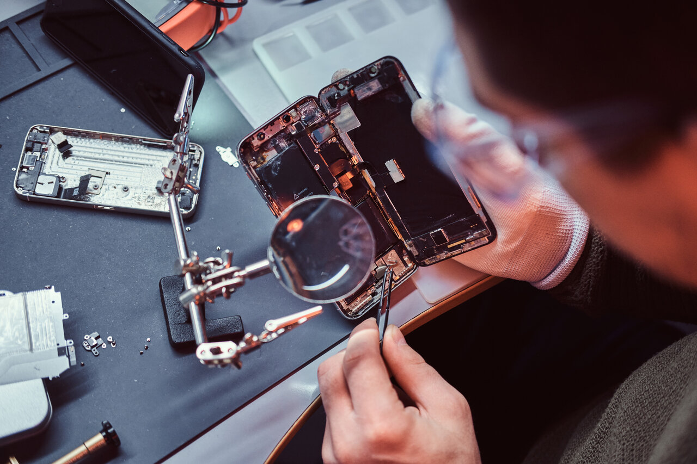

About Us
“JL Soluciones Tecnológicas” is a company with more than 20 years of experience in the area of specialized Technical Services for Cell Phones and Computers, which offers a wide range of services and solutions. We provide our clients with the advice and support they deserve when purchasing one of our products or services, as well as any technology-related products or services.
When purchasing a mobile device, most customers want to know about its performance and functionality, but cannot achieve this before purchasing it. Customers will be able to find detailed information on our products on our website; this makes it possible to have an effective comparison between their quality and functionality, as well as details of the services offered and the procedures in every case be followed. Accompanied by this information there are images and details that will allow them to see the operation or performance of the equipment, as well as a percentage relationship between the general opinion of the equipment, and the recommendation they receive from other users. Free advice that allows them to find simple and quick solutions to the problems that their equipment is presenting. In addition, they can learn more about the methods used in the repair process and the technologies used, in order to have a better understanding of the processes to follow.
Why Us?
What sets us apart from other services is our value commitment to constantly striving to provide exceptional service and products with quality and care superlatives. The most important thing for us is our clients and try to ensure that they can understand what situation they are facing, or how it is possible to solve it.
The experience acquired and the experiences of our clients make it possible for the process to continue improving at all times, refining details of the need and current realities adjusted to the most modern technological methods and procedures.
Constant training in the repair processes and methods available in the technological area makes our service maintain the highest standards, ensuring our clients an effective response to their needs.